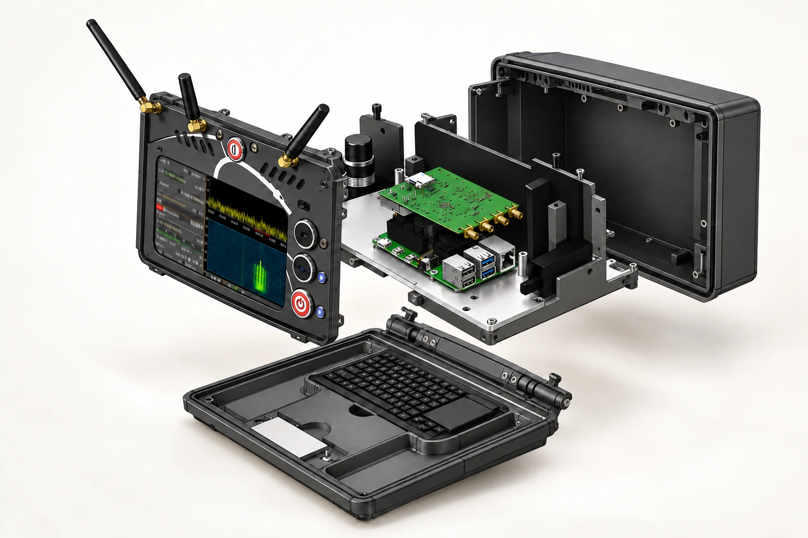
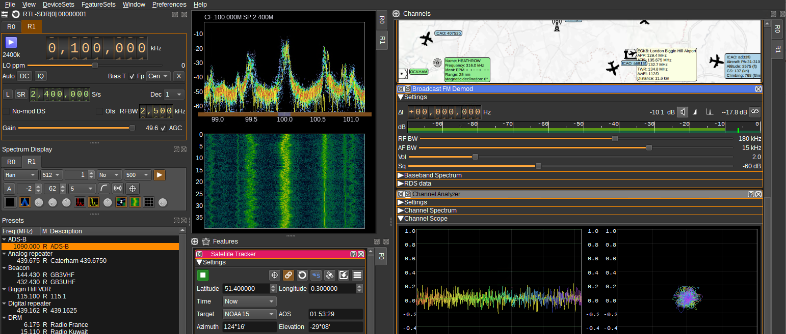
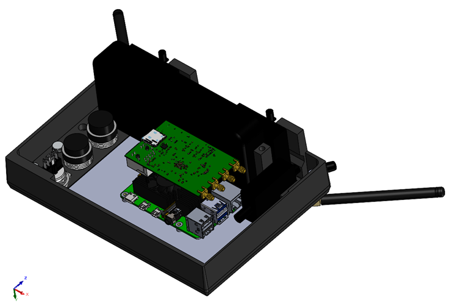
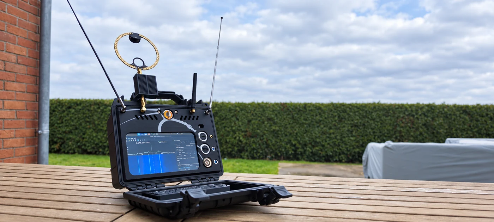

Concevoir une unité mobile pour l’analyse et les audits radiofréquences sur site.
SDRRaspberry PiIntégration mécanique

Vue éclatée illustrative du projet.Le besoin
Concevoir une unité mobile pour l’analyse et les audits radiofréquences sur site.
L’intervention
Intégration de l’architecture SDR, de son pilotage et du châssis dans une valise transportable.
Le résultat
Un prototype autonome réunissant écran, commandes, électronique et antennes.
Analyse du besoin
La vulnérabilité des protocoles sans fil est devenue un enjeu majeur pour l'industrie et le secteur médical. Aujourd'hui, la surface d'attaque d'une entreprise ne s'arrête plus à ses prises Ethernet : la multiplication des objets connectés (IoT) et des automates industriels crée des failles invisibles mais critiques.
L'AEGIS-RF a été conçu pour identifier et prévenir des menaces concrètes avant qu'elles ne soient exploitées, telles que :
Espionnage industriel : Interception de flux de données non chiffrés provenant de capteurs de production, empêchant le vol de secrets de fabrication.
Infiltration de sites sensibles : Exploitation de vulnérabilités sur les contrôles d'accès (badges, portails) via des attaques par rejeu.
Sécurité biomédicale : Manipulation à distance de dispositifs critiques soumis à la norme IEC 60601-1-2 (pompes à insuline, moniteurs), évitant tout arrêt de service malveillant.
Sabotage de sécurité : Neutralisation par brouillage des détecteurs d'incendie ou d'intrusion sans fil.
L’objectif est de fournir un appareil capable d'évaluer la résilience de ces systèmes sur une plage de 70 MHz à 6 GHz, tout en garantissant une autonomie de plus de 8 heures pour des interventions sur site.
Conception et Architecture
Pour offrir une telle polyvalence, nous avons opté pour une architecture Software Defined Radio (SDR) de pointe. Le cœur du système repose sur un SoC Zynq7020 associé à un transceiver AD9363, permettant un fonctionnement en Full Duplex sur l'ensemble du spectre. Le pilotage logiciel est assuré par un Raspberry Pi 5 sous une version modifiée de Kali Linux, garantissant l'accès aux outils de cybersécurité offensive les plus performants.

L'architecture interne a été réalisée en impression 3D sur mesure afin d'adapter parfaitement le châssis aux différents modules RF et cartes électroniques.
En raison des fortes puissances mises en jeu par les amplificateurs de 2W et 4W (gains de 23dB et 40dB), une attention particulière a été portée à la dissipation thermique. Un système de refroidissement actif a été intégré pour garantir la stabilité des fréquences et la longévité des composants lors des sessions d'audit intensives.

Conclusion
L'unité intègre des étages d'amplification spécifiques calibrés pour couvrir aussi bien le Sub-GHz que la bande 2.4 GHz. Le résultat est un outil de diagnostic totalement autonome permettant aux ingénieurs et responsables sécurité de confronter leurs équipements à la réalité du terrain.
En simulant des attaques par rejeu, des brouillages sélectifs ou des dénis de service RF, l'AEGIS-RF assure une protection proactive des systèmes critiques et une validation concrète des protocoles de sécurité en environnement réel.

Un projet similaire ?
Parlons de votre besoin.
Une idée, une difficulté technique ou un prototype à faire évoluer.